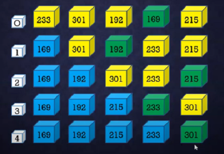
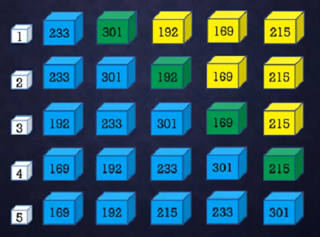
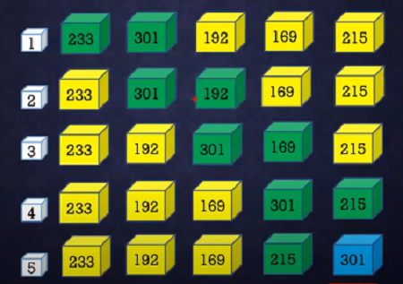
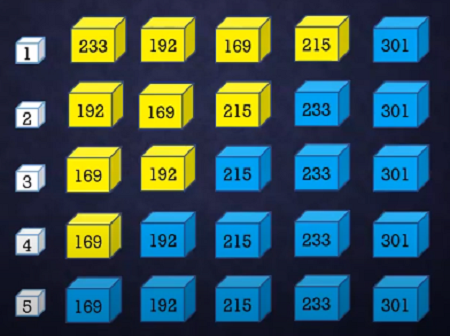
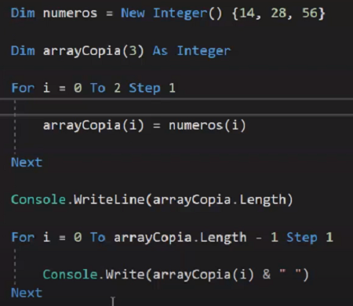
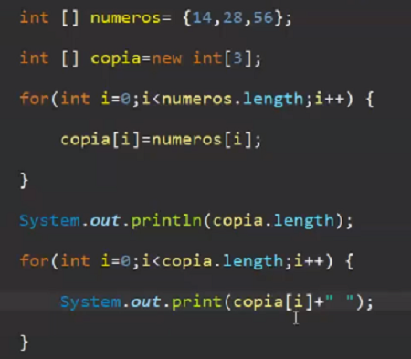
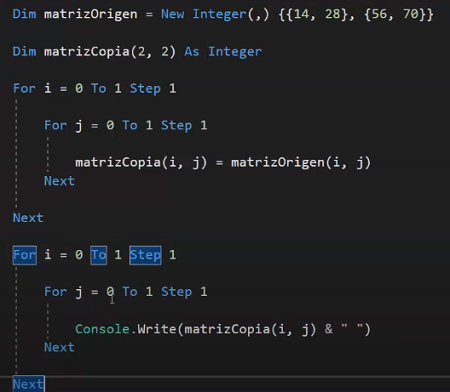
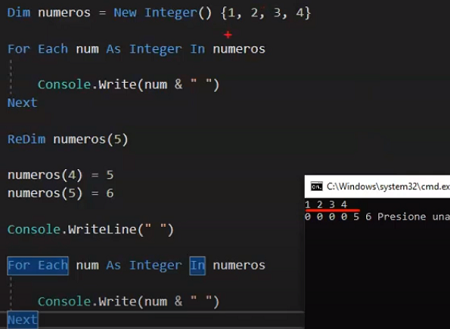
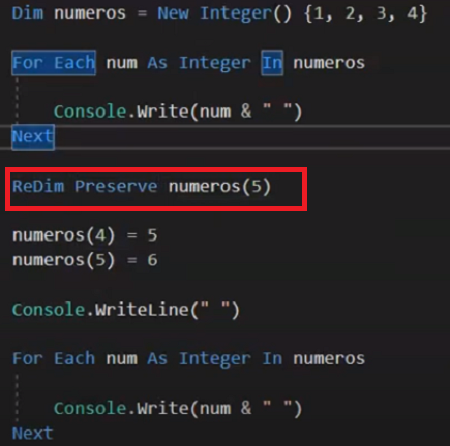

| Referencia | Descripcion | Ejemplo |
|---|---|---|
| Ordenamiento de Arrays | Ordenar un array sirve para cuando se tienen muchos datos y se ordenan especialmente los numericos | Algoritmos de ordanamiento * Ordenamiento por seleccion * Ordenamiento por Inserción * Ordenamiento por Metodo de la burbuja |
| DOM |
* Es la representación de datos de los objetos que comprenden la estructura y el contenido de un documento en la web. * Es una interfaz de programación para documentos web. Representa la página para que los programas puedan cambiar la estructura, el estilo y el contenido del documento. El DOM representa el documento como nodos y objetos * El (DOM) permite manipular el html * El (DOM) es el puente entre el html y JavaScript lenguaje de scripting * El DOM se construye utilizando múltiples API que funcionan juntas * El DOM no es un lenguaje de programación * El DOM no es parte del lenguaje JavaScript * El DOM fue diseñado para ser independiente de cualquier lenguaje de programación en particular |
|
| Ordenamiento por seleccion |
1. primero se separan dos grupos los ordenados y los no ordenados, como estan en desorden el primer elemento se dice que esta ordenado y los demas no. 2. en el grupo de los desordenados se busca el elemento de menor valor si se intercambia con el primer elemento del array 3. despues nuevamente entre el grupo de los desordenados se encuentra el elemento de menor valor si va agragando al grupo de los ordenados y asi susesivamente |
 |
| Ordenamiento por Inserción |
1. primero se separan dos grupos los ordenados y los no ordenados, como estan en desorden el primer elemento se dice que esta ordenado y los demas no. 2. en el grupo de los desordenados se selecciona el elemento despues de la posicion 0, es decir el elemento de la posicion 1 y se va a intercambiar con el primer elemento del array si su valor es menor 3. despues nuevamente entre el grupo de los desordenados se continua consecutivamente con las demas posiciones del grupo desordeando y se va comparando si es menor que vaya intercambiando posiciones asi susesivamente |
 |
| Ordenamiento por Metodo de la burbuja |
ordenar primero los de mayor peso 1. primero se separan dos grupos los ordenados y los no ordenados, como estan en desorden el primer elemento se dice que esta ordenado y los demas no. 2. en el grupo de los desordenados se selecciona el elemento despues de la posicion 0, es decir el elemento de la posicion 1 y se va a intercambiar con el primer elemento del array si su valor es mayor 3. despues nuevamente entre el grupo de los desordenados se continua consecutivamente con las demas posiciones del grupo desordeando y se va comparando si es mayor que vaya intercambiando posiciones hasta llegar al finalasi susesivamente Como es posible identificar primero se ordenan los de mayor peso peroooo para realizar esta tecnica se requiere dos bucles for anidados |
bucle for interno
 bucle for externo  |
| Copiar un array a otro o una matriz |
Consideraciones 1. Deben tener los mismos tamaños 2. Deben de ser de los mismos tipos de datos 3. El array o matriz destino debe ser vacio |
Copia Array VB
 Copia Array Java  Copia Matriz VB  |
| Busqueda |
Busqueda de datos parcial Busca un elemento en concreto dentro del array Ejemplo: 45 : Cuando el datos que se esta buscando haga match con un dato dentro del array la busqueda finaliza Busqueda total Recorre todo el Array Ejemplo: Cuantas personas son menores a 50 : para en este caso debe recorrer todo el array |
|
| Redim y Perserve |
Si no se realiza Redim Preserve ArrayX(Y) borra los datos anteriores  |
 |